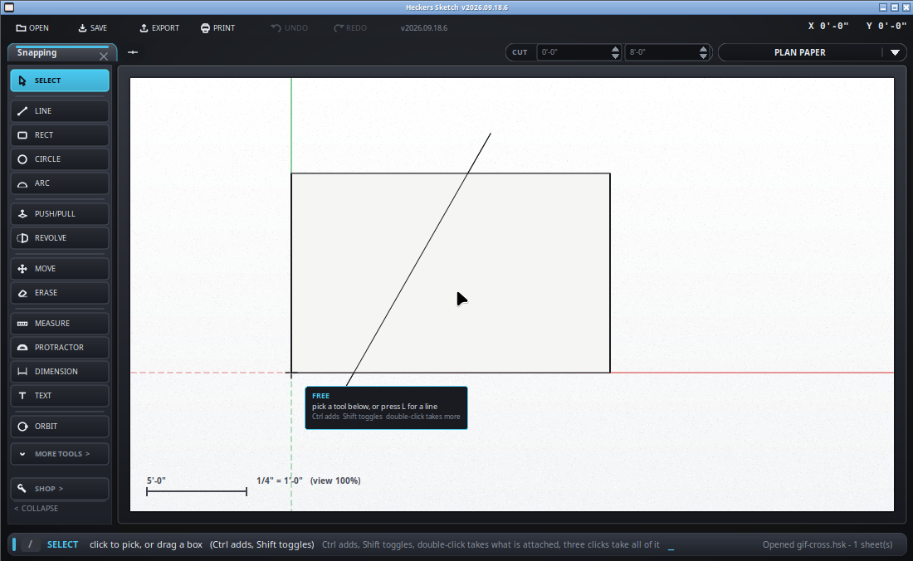

How the cursor finds the point you meant.
Move the cursor near something and a small diamond appears, with a word for it in the bar along the bottom. That diamond is where the next click will land - not where the pointer is.

| Color | What | |
|---|---|---|
| Green | ENDPOINT | a corner, or the end of a line |
| Green | CENTER | the middle of a circle or an arc |
| Cyan | MIDPOINT | the middle of a whole edge |
| Cyan, hollow | ON SEGMENT | the middle of one piece of an edge that something crosses |
| Red | ON EDGE | anywhere along an edge |
| Violet | CROSSING | where two edges - or two guides - cross |
| Blue | ON FACE | on the surface, when nothing better is near |
| Yellow | ORIGIN | 0,0,0 |
| Axis color | ON RED / GREEN / BLUE AXIS | on one of the three lines through the origin |
| Magenta | PARALLEL TO EDGE | along the edge the line started on, or the piece just drawn |
| Magenta | PERPENDICULAR TO EDGE | square to that same edge, in the plane you are drawing on |
| Accent | GRID | the SNAP TO step, when there is nothing else - a dot, not a diamond |
A corner beats a midpoint, a midpoint beats a point on an edge, and anything beats the grid. That order is why you can aim roughly at a corner and still get the corner.
The word in the bar is worth trusting more than your aim. If it says ON EDGE when you wanted ENDPOINT, move a few pixels rather than clicking and undoing.
SNAP TO along the bottom is how far apart the grid points are - 1/16", an inch, a foot. It is the fallback when nothing else is near, so it never gets in the way of a corner. Set it to what you are working to and rough clicks land on round numbers.
Zoom in. The reach is in pixels, so zooming makes it choosier without changing any setting. This is also the fix when two things are close together and it keeps taking the wrong one.